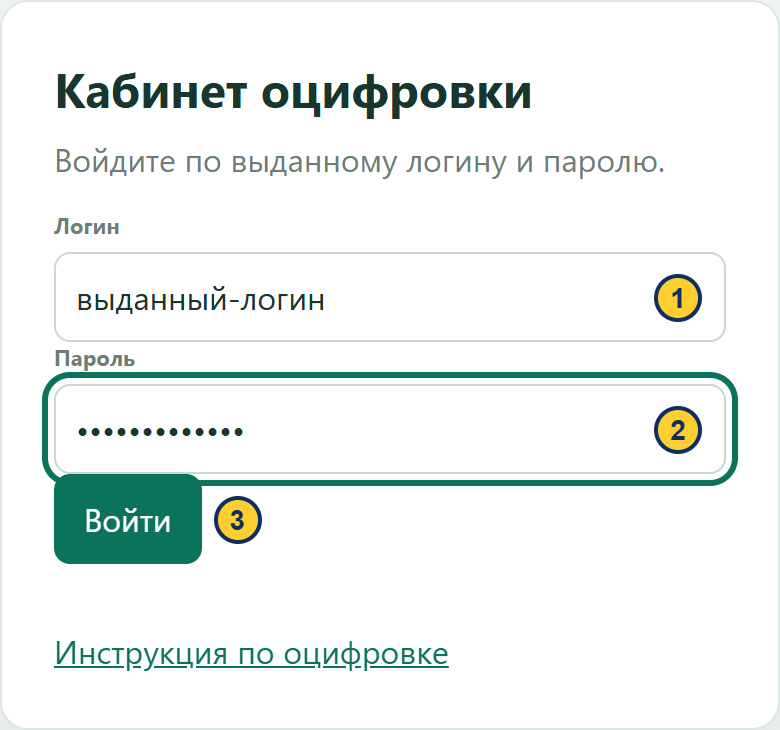
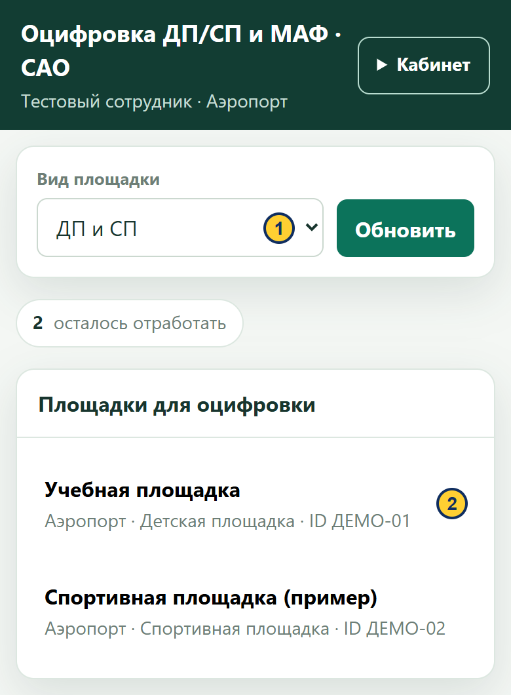
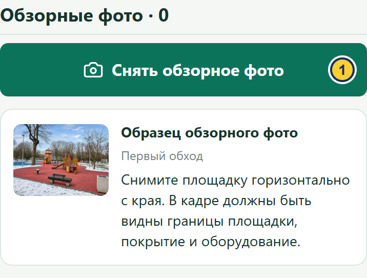
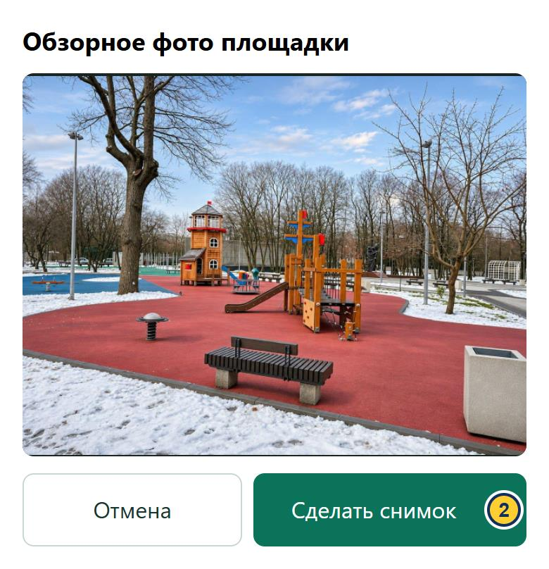
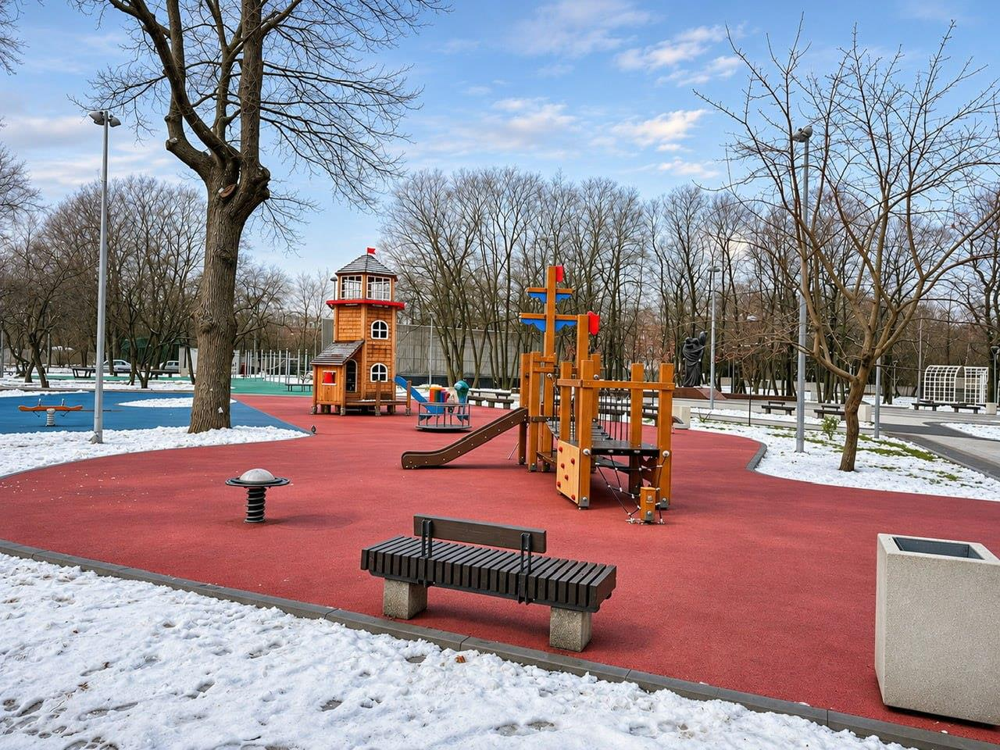
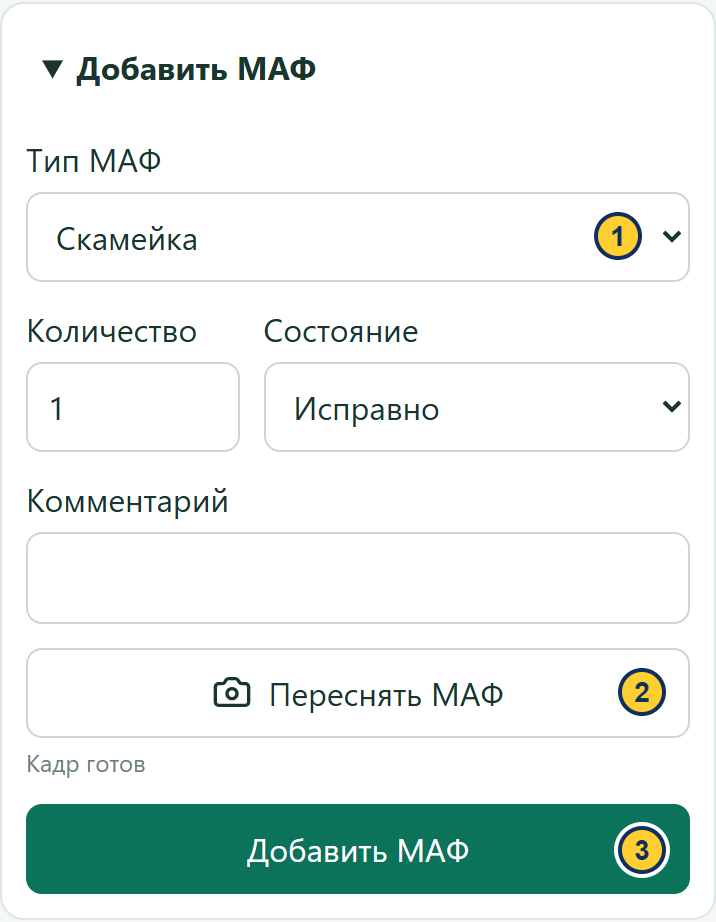
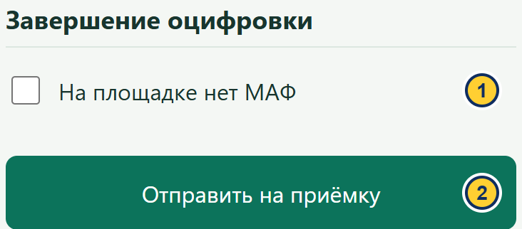

Северный административный округ Москвы
Инструкция по оцифровке детских и спортивных площадок
Для районов САО · кабинет ДП/СП и МАФ
На скриншотах учебные данные. Номера на экране соответствуют действиям под снимком. Печатная версия содержит краткую памятку.
1. Войдите и выберите площадку
- Откройте кабинет оцифровки ДП/СП на телефоне и введите логин и пароль района.
- У каждого района своя учётка. В ней открываются только площадки этого района. Все районы и приёмка доступны администратору.
- Выберите детские или спортивные площадки, откройте карточку по адресу и сверьте место по встроенной мини-карте.

- Введите логин района.
- Введите выданный району пароль.
- Нажмите «Войти».

- Укажите вид площадки, если нужно сузить список.
- Нажмите на карточку нужной площадки.
Если учётку ещё не выдали или указан другой район, обратитесь к администратору.
2. Сделайте обзорное фото
- На площадке встаньте у её края и поверните телефон горизонтально. Снимите общий план, чтобы в кадре были видны границы, покрытие и основное оборудование.
- Нажмите «Снять обзорное фото». Разрешите доступ к камере и, если браузер предложит, к геопозиции и датчикам движения.
- Проверьте композицию, нажмите «Сделать снимок» и дождитесь сообщения о сохранении. Если всю площадку трудно показать одним кадром, добавьте общий вид с другой стороны.



Снимайте через камеру кабинета на месте. Кнопка «Убрать фото» позволяет удалить неудачный обзорный кадр из карточки и снять его заново.
3. Заполните МАФ
МАФ — малые архитектурные формы и оборудование на площадке. Например, качели, скамейки и игровые комплексы.
- В раскрытой форме «Добавить МАФ» укажите тип, количество и состояние. При необходимости добавьте комментарий.
- Нажмите «Снять МАФ» и сделайте отдельный кадр, где хорошо виден внесённый объект и его состояние.
- Нажмите «Добавить МАФ» и повторите для остальных объектов. Если МАФ сохранился без фотографии, найдите его в списке и нажмите «Снять МАФ» в этой записи.

- Выберите тип и заполните остальные поля.
- Нажмите «Снять МАФ». После съёмки появятся кнопка «Переснять МАФ» и надпись «Кадр готов».
- Нажмите «Добавить МАФ» для сохранения записи.
4. Проверьте карточку и отправьте её
- Убедитесь, что есть хотя бы один новый обзорный кадр и фото каждой заведённой записи МАФ. Если оборудования нет, отметьте «На площадке нет МАФ».
- Мини-карта открыта сразу. Если телефон записал GPS, она показывает точку съёмки. При наличии показания компаса стрелка отображает направление кадра. Если GPS недоступен, на карте остаётся отметка площадки. При нескольких фото выберите нужное в поле «Снимок на карте».
- Нажмите «Отправить на приёмку». После отправки карточка уйдёт из рабочего списка.
- Если администратор вернёт карточку, она снова появится в рабочем списке со статусом «На доработке». Прочитайте причину, внесите исправления и отправьте карточку снова.

- Поставьте отметку «На площадке нет МАФ», если оборудования действительно нет.
- Нажмите «Отправить на приёмку».